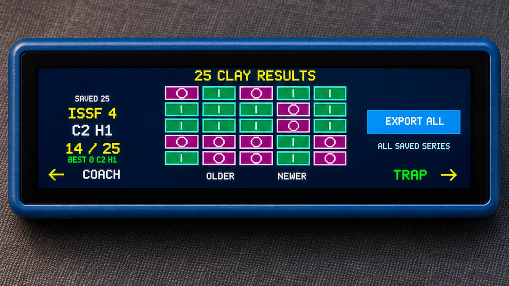

TRAP COACH
Don't just count hits.
Study the movement.
Look at what happened between target appearance and the virtual shot: when movement began, how it travelled and where the shot landed in the simulation.
Illustrative product render; final appearance may vary.

Illustrative product render; final appearance may vary.
TIMING
Find the first movement.
COACH can show movement onset, the interval from a visible clay to a first shot, angular motion and an estimated linear speed. These values describe the simulator and its sensor data, not a certified assessment of live technique.
SESSION REVIEW
See the 25-target picture.
Review virtual hits and misses, first- and second-shot timing, and session-level results. Compare like for like: the same simulator settings make records more meaningful.

Illustrative product render; final appearance may vary.

Illustrative product render; final appearance may vary.
FOLLOW THE TRACE
Pause, compare, repeat.
Target and device-motion trajectories help place a virtual shot in context. Optional export to a microSD card can support later review; the card is not included and normal play does not need one.
See the ready-to-use deviceA CLEAR LIMIT
Useful simulator feedback, not a performance certificate.
TrapFan does not measure a real barrel path, eye movement or live-range accuracy. Treat COACH as a way to make practice observations, then discuss live technique with an appropriate coach.